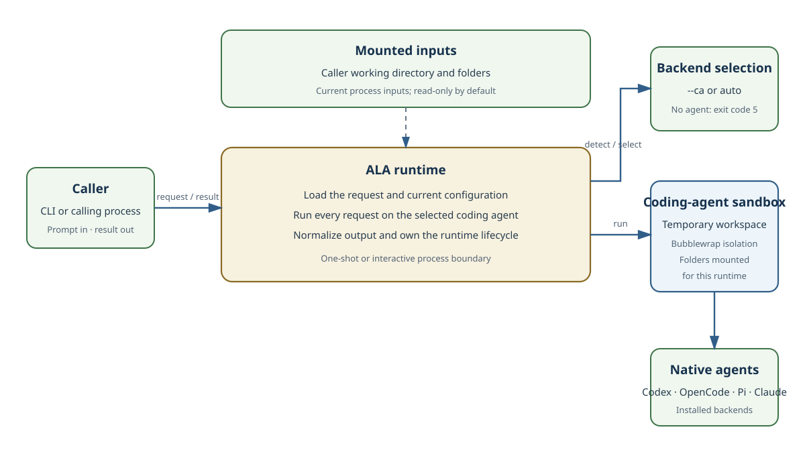

Runtime architecture
ALA owns request loading, configuration, sandboxed coding-agent delegation, normalized output, and cleanup. It mounts exactly the directories the caller supplies through --cwd and --folder and never manages task skills.
System architecture

The CLI and input loader compose one request from command arguments and supported payload sources. Configuration supplies the default coding agent and each backend's model and effort. The runtime hands every request directly to CodingAgentService (src/coding-agents/service.mjs), which owns backend discovery, Bubblewrap construction, native CLI invocation, event parsing, and mount handling. When no backend is detected, execution fails with exit code 5 before any work.
Responsibility boundary
The caller decides which directories are visible, which working directory is writable, and what task methodology to follow. ALA mounts those directories at their canonical paths, or under a caller-chosen alias, and runs the request on the selected authenticated coding agent.
ALA does not discover, copy, mount or overlay task skills. It validates the supplied directories, mounts each read-only unless marked write, and lets the selected backend work inside that layout. Provider authentication and installed coding-agent state remain owned by the coding agents; ALA exposes only controlled state paths inside the sandbox.
Process and workspace lifetime
Single-shot and interactive execution share the same components but have different lifetimes. A single-shot invocation creates one ALA runtime for one request. It uses an explicit --cwd or creates a retained temporary directory, mounts the caller folders, runs the selected backend, and returns the normalized result. A later invocation normally starts independently. Explicit session mode appends each turn to a session transcript under ALA_SESSIONS, or <cwd>/.ala by default, and reloads the pinned backend and native continuation from that file on --resume-session. Codex app-server, Pi RPC, and Claude Code's stream-json input provide live steering; OpenCode executes queued follow-ups sequentially.
An interactive invocation retains one ALA runtime. Its working directory is created lazily and reused until the session exits; the first selected coding backend becomes pinned, and that backend's native continuation remains available to later prompts in the same interactive process. Model and web-search commands can update the retained runtime for subsequent turns. These interactive guarantees do not apply across separate one-shot processes.
Native permission decisions belong to the selected backend. ALA transports display choices and opaque replies through its event/control stream without storing an authorization cache. Codex uses app-server approval requests for controlled execution. OpenCode uses one authenticated loopback server per execution, preserving its saved native session while isolating transient permission grants. Claude Code sends can_use_tool control requests over its standard output, and ALA answers them on its standard input. Pi has no native tool-approval prompts and rejects ask-for-approval. Control-channel loss cancels the owned operation; it does not grant access.
Repeatable --folder <path> [write] [as <alias>|at <absolute-path>] [expose] options expose caller-owned directories. ALA handles path validation and mounting only. The caller owns dependencies, configuration, communication protocols, and cleanup. Unix sockets inside a mount remain caller-owned and accessible according to their permissions.
Discovery and portability
ALA's only discovery is coding-agent backend detection at process startup through CODEX_BIN, OPENCODE_BIN, PI_BIN, CLAUDE_BIN, standard installation locations, and PATH. It never scans a caller workspace for task descriptors.
The package declares no runtime npm dependencies; it relies on Node.js built-ins, Bubblewrap, and the already installed coding-agent CLIs. Imported task skill instructions, code, pages, and specifications remain in the repository that owns them.